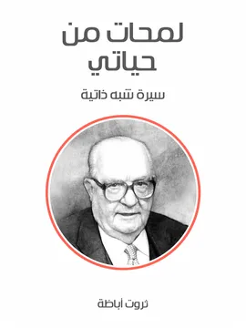

لمحات من حياتي: سيرة شبه ذاتية

قراءة عربية أصلية محددة النطاق في الصفحات 9 إلى 14 من ملف PDF المرتبط، وليست تلخيصا كاملا للكتاب. نناقش ما تدعمه هذه المقاطع فقط.
ثروت أباظة يتذكر: أربع درجات في الرسم
يتذكر الكاتب مدرسته الأولى: روفية رمضان التي لا تزال صورتها في ذاكرته، والسيدة توحيدة الدمرداش التي كانت ترعاه بحدب ورضاء، والأستاذة نعيمة التي جعلته يرسم رسمًا جميلًا، وهو ما لم يتكرر في الابتدائية أو الثانوية رغم أن الذي درس له الرسم كان الفنان الكبير حسني بيكار وفنان الكاريكاتير الشهير رمزي؛ ومع ذلك كان دائمًا لا يجيد الرسم، حتى إن والدته كانت تقول إنها خائفة أن يرسب في مادته، وكاد حدسها يتحقق: حصل في شهادة الابتدائية على أربع درجات من عشرين، وهي الحد الأدنى للمرور ولا يقول النجاح. قضى في مدرسة الروضة سنتين وكان متقدمًا لأنه سبق زملاءه في تعلم العربية والحساب على يد الشاعر أحمد القرعيش ببلدتهم غزالة، أول من علمه بادئًا الخط الأفقي والخط الرأسي، وكان يشكل الخطوط على الرمال حيث كانوا يجلسون على أريكة خارج مبنى كتاب الحسابات لزراعة أبيه، ويشهد أن القرعيش أحسن من علمه.
زاوية وحدود القراءة
قراءة موجزة من ص ٩ إلى ص ١٤ من أصل ٩٦ صفحة، تعرض الفصل الأول، لا الكتاب كاملًا.
الطبعة والقراءة
هذه النسخة من الكتاب صادرة ومتاحة مجانًا بموجب اتفاق قانوني بين مؤسسة هنداوي وأسرة السيد الأستاذ ثروت أباظة.
تنزيل PDF المجاني ↓ القراءة والمصدر الرسمي ↗